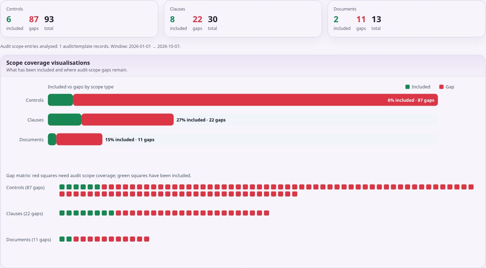
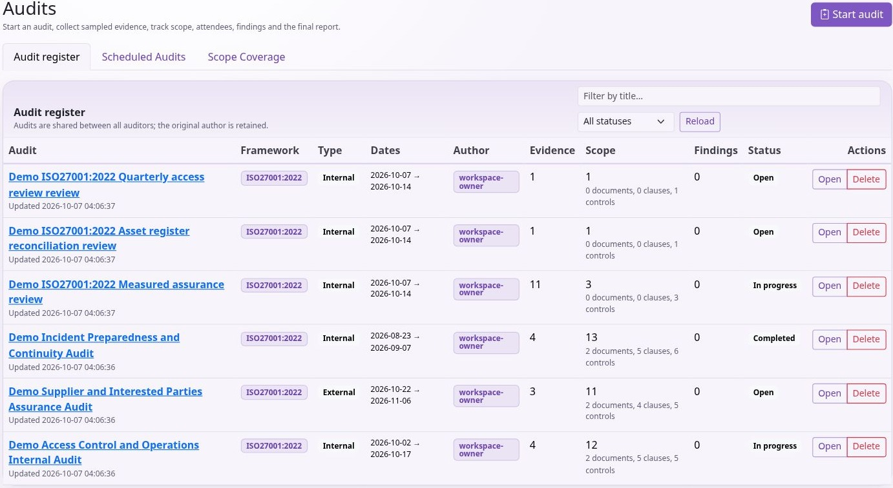
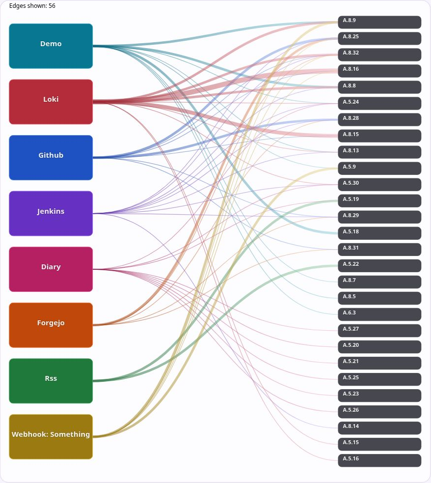

Using KEEN
Plan audits and sample evidence
Chapter 12 of 15
Plan audits and sample evidence

Plan and conduct audits
Use Audits to create an audit with a clear scope, framework, dates and responsible participants. Add relevant controls and clauses, then sample evidence, risks or other supported records. Explain why each sample was selected and what it demonstrates. Include both favourable and adverse evidence where needed for a balanced conclusion.

Record findings with enough detail to identify the requirement, observed facts and necessary action. Maintain notes and the executive summary, and review the audit before completing it. Completed audits restrict further mutation; finish the review before changing status.
Scheduled audits generate audit records through the background scheduler. Creation timing depends on the configured look-ahead window. Email and calendar invitations require outbound mail configuration. Check that the scheduled audit actually appears and that participants can access it.
Use scope-coverage views across audits to identify requirements that have not been examined recently. Use coverage to plan reviews, then examine sample quality and audit outcomes.
Plan and conduct an audit
- Open Audits → Start audit. Supply title, framework, audit type, begin/end dates, and report notes explaining purpose and boundaries. You can draft the executive summary later.
- Select the ISMS documents, clauses and controls in scope. Use filters to find the intended items and inspect the saved scope. Define the audit scope explicitly alongside its title.
- Open the audit and add participants. Prefer the Person directory; existing KEEN-user selection remains available. Record their role in the audit and check names/contact details before sending any invitations through configured features.
- From an event or supported record, use its sampling action to add it to the audit. Include risks, assets, objectives, effectiveness measures or other supported records as relevant. Review the audit’s samples and explain selection and assessment in the available notes.
- Compare each requirement with the sampled facts. Add a finding with enough detail to identify the requirement, observation and needed action. Include adverse as well as favourable evidence.
- Maintain Report Notes and Executive Summary. Attach an external report with Upload report or add supporting URLs where useful. Review scope, participants, samples and findings together.
- Use Export audit ZIP and inspect the exported material. Check that the intended evidence is present and appropriate to share. Complete the audit only after review: completed audits restrict further mutation.
A linked control is a scope statement; a sample is the material actually examined; a finding is the result of your assessment. Keep those distinctions visible. Select samples that cover important requirements and the relevant period.
Select evidence and finish an audit
Start with the audit’s framework, purpose, dates, participants and scope. Use Open while preparing and In progress while conducting it. Scope comprises selected documents, clauses and controls. Scope identifies planned coverage. Sample the material you examined and record the results of testing.
Choose the material to sample
From an evidence event or another supported detail page, use Sample into audit, select the intended mutable audit and add a meaningful title and notes. The API supports evidence events, risks, PESTLE(E) items, interested parties, objectives, documents, BookStack policy snapshots, organisation-chart nodes, assets, access-matrix rows, application-configuration rows, meeting minutes, effectiveness measures and individual metric entries. The audit also accepts supporting URL evidence.
Explain why you selected each sample, which requirement it addresses and what you observed. Sampling the same event or entity again updates its existing sample information. Removing a sample removes its association with the audit; it is different from deleting the underlying event or ISMS record.
Most sampled ISMS records are references to the underlying record, which can change after sampling. Keep the applicable native document version or a captured artefact when you need a historical point-in-time record. A BookStack policy snapshot has its own captured revision/checksum and is sampled under its target framework.
Record findings and conclusions
Findings can be Major Non-Conformity, Minor Non-Conformity, Opportunity for Improvement or Best Practice. Give each finding a title and description, optionally associate a control, and maintain its status as Open, Accepted or Closed. Explain the requirement, sampled observation and conclusion with enough detail for another reviewer to follow the assessment.
Maintain the audit’s report notes and executive summary, add supporting links and upload the final report where applicable. Review participants, scope, samples and findings before completion. Completed and Archived audits restrict edits to their contents; ensure necessary changes are made while the audit is mutable.
Export audit ZIP renders the audit page as a PDF, includes its uploaded final report when present, and downloads attachments associated with sampled evidence events. Capture linked external content and other ISMS records separately when they are required in the export. Inspect the export before distributing it, including any configured masking and PDF footer.
Schedule the next audit
Scheduled Audits holds templates that create ordinary Open audit records. Choose an exact date, the first weekday of a month or the first named Monday–Friday. Recurrence choices are once, weekly, monthly, quarterly and yearly, with an interval and optional end boundary. Month-based first-weekday rules cannot be combined with weekly recurrence.
Maintain scope and attendees on the template. Selected documents can contribute their linked clauses and controls when the occurrence is created. Date-only scheduling uses the server’s KEEN_TIMEZONE; the administrator can also configure how many days ahead occurrences are created. An occurrence already created is a separate audit record, so review it when changing its template.
The worker and scheduler must be running for creation to occur. Configured mail can deliver notifications and calendar information. Verify delivery after saving the template. Scope Coverage compares completed audits, scheduled occurrences or both over the chosen window. Use it to identify planned and completed coverage, then assess the quality and outcome of the work.
Schedule recurring audits and check coverage
- Open Audits → Scheduled Audits. Enter title, framework, audit type and planning notes.
- Use the Date selector to choose the supported date rule. Set the first run date, or the first-weekday month/year fields offered by the selected rule. Check the intended date against the working days in that month.
- Set the end date/duration details, Recurrence, Every interval and Until where appropriate. A one-off schedule and a recurring template serve different purposes.
- Select policies/processes in scope and add attendees with the supported name, account, email and role fields. Save the scheduled audit and inspect its calendar placement.
- Before the date, confirm the audit record was created. The backend creates it according to
KEEN_SCHEDULED_AUDIT_CREATE_DAYS_AHEAD; creation occurs within that configured lead time. - Open the created audit and review its actual scope and participants. A later template change should not be assumed to rewrite an already-created audit. Review both separately.
Worker and scheduler availability are required. Email/calendar delivery additionally needs configured outbound mail. If a scheduled occurrence is missing, ask the administrator to check scheduling logs and the look-ahead window. Avoid creating duplicate manual audits until you know whether an occurrence is queued.
In Scope Coverage, choose the audit source (as offered by the screen), date range and filters. Inspect which controls, clauses and documents have been included and follow links back to those audits. Use gaps to plan future coverage. Review sample sufficiency and findings for each requirement included in an audit.
Read the evidence visualisations
Open Controls → Visualisations to explore source-to-control graphs, heatmaps and a control sunburst. Graph edges show mapped-event relationships. In the sunburst, inner segments represent controls and outer segments represent contributing sources. Click inner segments to zoom, outer segments to open filtered events, and the centre to zoom out.
Use the coverage views to find controls without evidence for the selected period. In Audits → Scope Coverage, review requirements and documents included in audit scope, and the gaps remaining in the selected window. Review evidence quality and audit findings alongside these counts.
